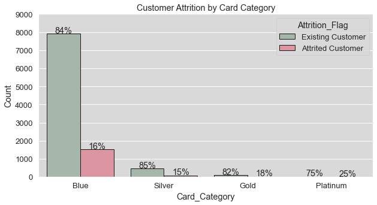
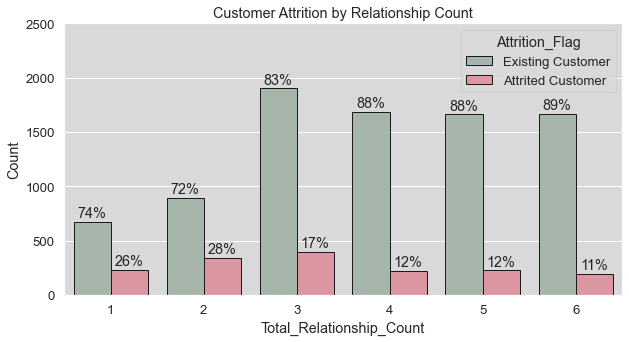
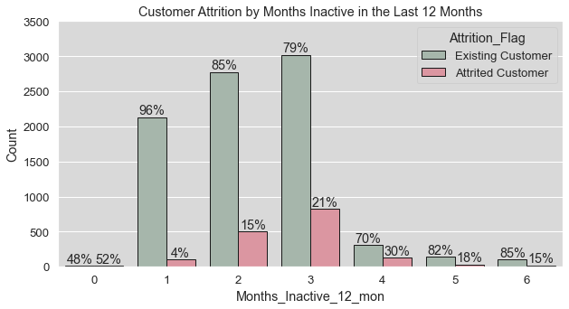
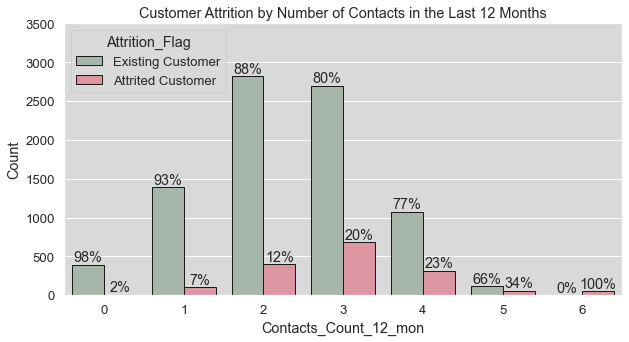
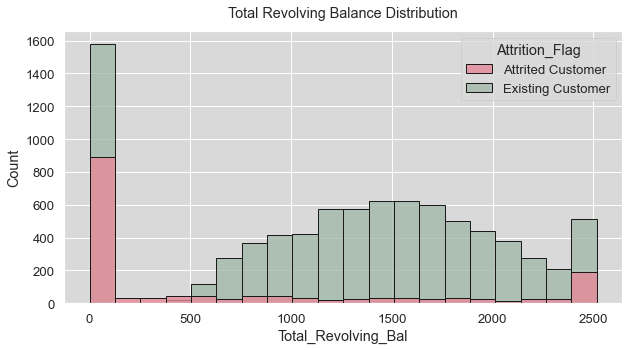
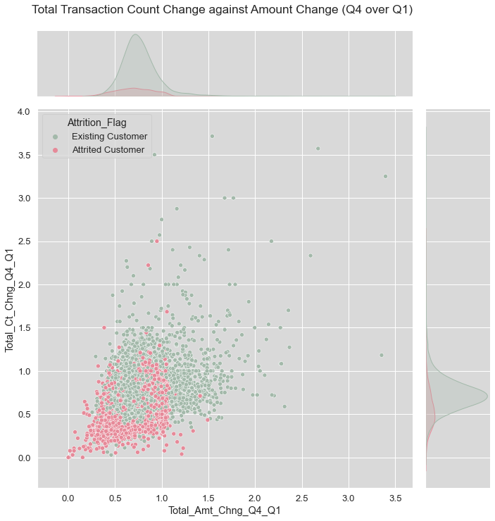
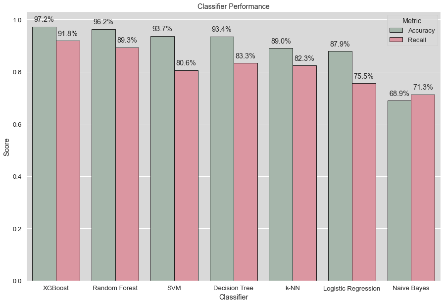

Credit Card Customer Churn Prediction
In this project I compare the predictive performance of various machine learning classifiers when it comes to predicting customer attrition for a bank's credit card services. The XGBoost algorithm outclassed all of the other selected classifiers and achieved an accuracy score of 97% and a recall score of 92%. Numeric features such as total transaction amount, the number of transactions, the total revolving balance, and the number of products held by the customer proved to be highly predictive of customer churn. In this post, I will go over the data exploration, data preprocessing, and modeling that were conducive to obtaining these results. The entire analysis is done in Python.
Introduction
This particular project was of interest to me, because customer retention is a major goal, not just for banks, but for all kinds of companies and organizations. Being able to accurately predict customer attrition (or churn) is an immensely powerful tool when it comes to retaining customers. For example, when you can accurately predict which customers are likely to cease their relationship with the business in advance, you are now in a position to try and keep said customers by for instance offering special promotions.
I used a public Kaggle dataset for this task. It contains information on 10,000+ customers of a bank with 21 features including demographic information such as customer age, gender, and education level, but also variables related to the customers' credit card usage, such as total transaction amount, total revolving balance, and months of inactivity in the last 12 months. The next section will explore the data in more detail, before moving on to the data preprocessing and modeling in the subsequent sections. The complete Jupyter notebook can be found on my GitHub page. The notebook contains additional figures as well as code I omitted from this post.
Data Understanding
As mentioned above, the dataset contains 21 features worth of data on more than 10,000 customers. The features and their description look as follows:
- CLIENTNUM: Client number. Unique identifier for the customer holding the account
- Attrition Flag: Internal event (customer activity) variable - if the account is closed then 1 else 0
- Customer_Age: Demographic variable - Customer's Age in Years
- Gender: Demographic variable - M=Male, F=Female
- Dependent_count: Demographic variable - Number of dependents
- Education_Level: Demographic variable - Educational Qualification of the account holder (example: high school, college graduate, etc.)
- Marital_Status: Demographic variable - Married, Single, Divorced, Unknown
- Income_Category: Demographic variable - Annual Income Category of the account holder
- Card_Category: Product Variable - Type of Card (Blue, Silver, Gold, Platinum)
- Months_on_book: Period of relationship with bank
- Total_Relationship_Count: Total no. of products held by the customer
- Months_Inactive_12_mon: No. of months inactive in the last 12 months
- Contacts_Count_12_mon: No. of Contacts in the last 12 months
- Credit_Limit: Credit Limit on the Credit Card
- Total_Revolving_Bal: Total Revolving Balance on the Credit Card
- Avg_Open_To_Buy: Open to Buy Credit Line (Average of last 12 months)
- Total_Amt_Chng_Q4_Q1: Change in Transaction Amount (Q4 over Q1)
- Total_Trans_Amt: Total Transaction Amount (Last 12 months)
- Total_Trans_Ct: Total Transaction Count (Last 12 months)
- Total_Ct_Chng_Q4_Q1: Change in Transaction Count (Q4 over Q1)
- Avg_Utilization_Ratio: Average Card Utilization Ratio
The table below shows the first two and last two rows of the dataset.
churn dataframe| CLIENTNUM | Attrition_Flag | Customer_Age | Gender | Dependent_count | Education_Level | Marital_Status | Income_Category | Card_Category | Months_on_book | Total_Relationship_Count | Months_Inactive_12_mon | Contacts_Count_12_mon | Credit_Limit | Total_Revolving_Bal | Avg_Open_To_Buy | Total_Amt_Chng_Q4_Q1 | Total_Trans_Amt | Total_Trans_Ct | Total_Ct_Chng_Q4_Q1 | Avg_Utilization_Ratio | |
|---|---|---|---|---|---|---|---|---|---|---|---|---|---|---|---|---|---|---|---|---|---|
| 0 | 768805383 | Existing Customer | 45 | M | 3 | High School | Married | $60K - $80K | Blue | 39 | 5 | 1 | 3 | 12691.0 | 777 | 11914.0 | 1.335 | 1144 | 42 | 1.625 | 0.061 |
| 1 | 818770008 | Existing Customer | 49 | F | 5 | Graduate | Single | Less than $40K | Blue | 44 | 6 | 1 | 2 | 8256.0 | 864 | 7392.0 | 1.541 | 1291 | 33 | 3.714 | 0.105 |
| ... | ... | ... | ... | ... | ... | ... | ... | ... | ... | ... | ... | ... | ... | ... | ... | ... | ... | ... | ... | ... | ... |
| 10125 | 717406983 | Attrited Customer | 30 | M | 2 | Graduate | Unknown | $40K - $60K | Blue | 36 | 4 | 3 | 3 | 5281.0 | 0 | 5281.0 | 0.535 | 8395 | 62 | 0.722 | 0.000 |
| 10126 | 714337233 | Attrited Customer | 43 | F | 2 | Graduate | Married | Less than $40K | Silver | 25 | 6 | 2 | 4 | 10388.0 | 1961 | 8427.0 | 0.703 | 10294 | 61 | 0.649 | 0.189 |
In the Jupyter notebook visualizations for nearly every feature can be found. Below I will highlight the most interesting ones. To start with a bar chart of customer attrition by income category. It's easy to see that most customers belong to the less than $40k income category. What's interesting, is that the income categories at the far left and right end of the distribution ('Unknown' not being of much relevance) have a relatively higher rate of attrited customers (~17%) than the income categories in between. Whether this difference is significant and will translate into predictive power remains to be seen.
ax = sns.countplot("Income_Category", data=churn, hue="Attrition_Flag", palette = ['#A3B9AA','#E68A99'], edgecolor = 'k',
order = ["Less than $40K", "$40K - $60K", "$60K - $80K", "$80K - $120K", "$120K +", "Unknown"])
ax.set_ylabel('Count')
ax.set_ylim(0,3500)
ax.set_title('Customer Attrition by Income Category')
ax.figure.set_facecolor('None')
bars = ax.patches
half = int(len(bars)/2)
left_bars = bars[:half]
right_bars = bars[half:]
for left, right in zip(left_bars, right_bars):
height_l = left.get_height()
height_r = right.get_height()
total = height_l + height_r
ax.text(left.get_x() + left.get_width()/2., height_l + 40, '{0:.0%}'.format(height_l/total), ha="center")
ax.text(right.get_x() + right.get_width()/2., height_r + 40, '{0:.0%}'.format(height_r/total), ha="center")
When we look at customer attrition by card category, it becomes apparent that by far most customers own a blue card, while the premium cards are less popular, which makes intuitive sense. The premium cards, such as the gold but especially the platinum card do seem to have relatively more customer churn tied to them. Only 20 customers in the dataset do in fact own a platinum card, so the difference might not be statistically significant, but it might still make a difference when it comes to modeling.
The distribution for the months on books feature shows a very peculiar spike around the 36 months value. While the reason for the spike is unclear, but might have something to do with company or subscription policy. The actual attrited and existing customer distributions do not seem to differ dramatically from each other. The months on book feature is therefore not likely to have a substantial impact on the performance of the classifiers.
ax = sns.histplot(data = churn, x = "Months_on_book", hue = "Attrition_Flag",palette = ['#E68A99', '#A3B9AA'],
edgecolor = 'k', hue_order = ["Attrited Customer", "Existing Customer"], alpha = 0.8)
ax.set_title('Months on book distribution', x = 0.5, y = 1.03)
ax.figure.set_facecolor('None')
From the chart below, we can infer that generally speaking the higher the relationship count (the total number of products held by the customer), the lower the attrition rate. This feature is likely to have significant predictive power. This finding is not unexpected either, as it has been a well-established strategy by banks to retain customers by offering them a range of products and services.
This next graphs shows that for customers who have been inactive for just a month in the last 12 months, the attrition rate is only 4%. However, inactivity for 3 or 4 months makes the attrition rate rise to 21% and 30% respectively. Therefore, the months inactive are likely to carry some predictive power. It is interesting that this effect does not appear to carry through for 5 and 6 months of inactivity. Perhaps, there is some form forgetfulness that comes into play after a few months have passed, because I had assumed that the longer the inactivity, the higher the attrition rate.
There appears to be a clear pattern in the graph below. The higher the number of contacts in the last 12 months, the more likely it is for the customer to churn. This feature is therefore likely to carry predictive power as well.
The following figure illustrates the total revolving balance distributions of existing and attrited customers. The distribution of the Attrited Customer class differs substantially from the Existing Customer distribution. There is a clear bell-shaped curve around a total revolving balance of 1500 for the existing customer distribution, which is almost completely absent in the distribution of the attrited customers. There are also major spikes on both ends of the distributions. This graph reveals the total revolving balance to be a potentially powerful predictor.
The scatterplot and distributions below indicate that existing customers tend to have a higher total transaction amount and count on average than the attrited customers. The intuitive logic where people who use their credit cards more often are less likely to cancel their credit cards also checks out. The distinction between two classes is evident and both features will likely benefit the classifiers greatly.
ax = sns.jointplot(x="Total_Trans_Amt",y = "Total_Trans_Ct", data = churn, hue="Attrition_Flag",
palette = ['#A3B9AA','#E68A99'], size= 10, kind = 'scatter')
ax.fig.suptitle('Total Transaction Count against Amount', x = 0.45, y = 1.03)
ax.fig.set_facecolor('None')
The figure below shows that existing customers tend to have a higher total transaction amount change between Q4 and Q1 on average than the attrited customers. In terms of total count change the distinction seems a bit less clear cut, but still significant. Both features are likely to prove valuable for the predictions.
Now that all features have been identified and the most interesting findings have been displayed, we can move on to the data preparation phase in which the data will be prepared for modeling.
Data Preparation
This preparation phase consists of handling missing values, transforming the categorical variables into dummy variables, splitting the dataset into a train- and test set, standardizing the numerical features and addressing class imbalance through oversampling.
I started processing the missing values by converting the "Uknown" string values to NaNs. Inspired by Kaan Akkartal's submitted notebook, I use the matrix function from the missingno module, which produces a nullity matrix, allowing us to quickly visualize whether there are missing values and where they occur.
churn[churn == "Unknown"] = np.nan
mat = msno.matrix(churn)
mat.figure.set_facecolor('None')
Missing values are clearly present in three of our features. Out of our 10,127 samples, 1,519 values are missing for the education level feature (15%), 749 for the marital status feature (7%) and 1,112 for the income level feature (11%). Why these three features have missing values is unclear. Because it involves three variables that are relatively sensitive, I assume privacy considerations might have played a role in this specific instance. In a real-life scenario, it would be important to investigate the cause of the missing values, but in our case we can either choose to omit the rows with missing values or impute the missing data. Because our dataset is not extremely large, simply omitting 15-33% of our data would probably not be the best idea. Therefore, I settled for imputation. Because all three of these features are categorical, I chose to impute the mode (the most commonly observed value) of each respective feature.
churn["Marital_Status"] = churn["Marital_Status"].fillna(churn.Marital_Status.mode()[0])
churn["Education_Level"] = churn["Education_Level"].fillna(churn.Education_Level.mode()[0])
churn["Income_Category"] = churn["Income_Category"].fillna(churn.Income_Category.mode()[0])
Next, the categorical features need to be transformed into dummy variables. After every conversion, the first dummy column is dropped to avoid perfect collinearity. After all dummies have been created, they are added to the dataframe, while their original counterparts are dropped.
churn = churn.join([pd.get_dummies(churn["Gender"], drop_first = True),
pd.get_dummies(churn["Education_Level"], drop_first = True, prefix = "Edu"),
pd.get_dummies(churn["Marital_Status"], drop_first = True, prefix = "Mar"),
pd.get_dummies(churn["Income_Category"], drop_first = True, prefix = "Inc"),
pd.get_dummies(churn["Card_Category"], drop_first = True, prefix = "Card"),
pd.get_dummies(churn["Attrition_Flag"])])
churn = churn.drop(["Attrition_Flag", "Gender", "Education_Level", "Marital_Status","Income_Category", "Card_Category", "Existing Customer"], axis = 1)
X_train, X_test, y_train, y_test = train_test_split(
churn.loc[:,"Customer_Age":"Card_Silver"], churn["Attrited Customer"], test_size=0.33, random_state=7)
Because not all machine learning estimators can handle features that aren't standard normally distributed properly, we standardize the numerical features by applying sklearn's standard scaler. The standard scaler standardizes features by removing the mean and scaling to unit variance. We fit the scaler to the training data and subsequently transform the training as well as the test data.
scaler = preprocessing.StandardScaler()
X_train[['Customer_Age','Dependent_count','Months_on_book',
'Total_Relationship_Count', 'Months_Inactive_12_mon',
'Contacts_Count_12_mon', 'Credit_Limit', 'Total_Revolving_Bal',
'Avg_Open_To_Buy', 'Total_Amt_Chng_Q4_Q1', 'Total_Trans_Amt',
'Total_Trans_Ct', 'Total_Ct_Chng_Q4_Q1', 'Avg_Utilization_Ratio']] = scaler.fit_transform(X_train[['Customer_Age','Dependent_count','Months_on_book',
'Total_Relationship_Count', 'Months_Inactive_12_mon',
'Contacts_Count_12_mon', 'Credit_Limit', 'Total_Revolving_Bal',
'Avg_Open_To_Buy', 'Total_Amt_Chng_Q4_Q1', 'Total_Trans_Amt',
'Total_Trans_Ct', 'Total_Ct_Chng_Q4_Q1', 'Avg_Utilization_Ratio']])
X_test[['Customer_Age','Dependent_count','Months_on_book',
'Total_Relationship_Count', 'Months_Inactive_12_mon',
'Contacts_Count_12_mon', 'Credit_Limit', 'Total_Revolving_Bal',
'Avg_Open_To_Buy', 'Total_Amt_Chng_Q4_Q1', 'Total_Trans_Amt',
'Total_Trans_Ct', 'Total_Ct_Chng_Q4_Q1', 'Avg_Utilization_Ratio']] = scaler.transform(X_test[['Customer_Age','Dependent_count','Months_on_book',
'Total_Relationship_Count', 'Months_Inactive_12_mon',
'Contacts_Count_12_mon', 'Credit_Limit', 'Total_Revolving_Bal',
'Avg_Open_To_Buy', 'Total_Amt_Chng_Q4_Q1', 'Total_Trans_Amt',
'Total_Trans_Ct', 'Total_Ct_Chng_Q4_Q1', 'Avg_Utilization_Ratio']])
oversample = SMOTE()
X_train_os, y_train_os = oversample.fit_resample(X_train, y_train)
The table below display the first two and last two rows of the final training dataset.
prepared churn training features| Customer_Age | Dependent_count | Months_on_book | Total_Relationship_Count | Months_Inactive_12_mon | Contacts_Count_12_mon | Credit_Limit | Total_Revolving_Bal | Avg_Open_To_Buy | Total_Amt_Chng_Q4_Q1 | Total_Trans_Amt | Total_Trans_Ct | Total_Ct_Chng_Q4_Q1 | Avg_Utilization_Ratio | M | Edu_Doctorate | Edu_Graduate | Edu_High School | Edu_Post-Graduate | Edu_Uneducated | Mar_Married | Mar_Single | Inc_$40K - $60K | Inc_$60K - $80K | Inc_$80K - $120K | Inc_Less than $40K | Card_Gold | Card_Platinum | Card_Silver | |
|---|---|---|---|---|---|---|---|---|---|---|---|---|---|---|---|---|---|---|---|---|---|---|---|---|---|---|---|---|---|
| 8439 | -0.663322 | 1.271476 | 0.012660 | -1.806011 | -1.316635 | -0.403355 | -0.741265 | -0.200947 | -0.723412 | -0.656724 | 0.063421 | 0.814924 | 0.009373 | 0.866369 | 1 | 0 | 1 | 0 | 0 | 0 | 1 | 0 | 0 | 0 | 0 | 1 | 0 | 0 | 0 |
| 7400 | 0.466451 | -0.273883 | 0.770575 | 1.409362 | -1.316635 | -1.306577 | 0.131340 | 0.141178 | 0.118727 | 0.131397 | 0.058426 | 0.729938 | 0.138445 | -0.524194 | 1 | 0 | 0 | 0 | 1 | 0 | 1 | 0 | 0 | 0 | 1 | 0 | 0 | 0 | 0 |
| ... | ... | ... | ... | ... | ... | ... | ... | ... | ... | ... | ... | ... | ... | ... | ... | ... | ... | ... | ... | ... | ... | ... | ... | ... | ... | ... | ... | ... | ... |
| 537 | -0.161201 | -0.273883 | -1.376851 | -0.519862 | 2.634872 | 0.499867 | -0.797622 | -1.429152 | -0.669843 | -0.395545 | -1.088725 | -1.607170 | -1.210568 | -0.992557 | 1 | 0 | 1 | 0 | 0 | 0 | 1 | 0 | 0 | 1 | 0 | 0 | 0 | 0 | 0 |
| 9412 | -0.412261 | 1.271476 | -0.745255 | -1.806011 | 0.659118 | -1.306577 | 2.332182 | 0.510378 | 2.286918 | 0.172636 | 3.077338 | 2.302175 | -0.694279 | -0.800129 | 1 | 0 | 0 | 0 | 0 | 1 | 1 | 0 | 0 | 1 | 0 | 0 | 0 | 0 | 1 |
Now that the data has been prepared, it can be used for modeling.
Modeling
I selected the following algorithms for this classification task:
- Logistic Regression
- Decision Tree
- k-Nearest Neighbors
- Naive Bayes
- Support Vector Machine
- Random Forest
- XGBoost
All of the models are imported through the sklearn module, except for the XGBoost classifier, which originates from the XGBoost module. Each of these models has a different way of approaching the problem and they all have their pros and cons when it comes to accuracy, speed, and transparency. I also attempted to optimize the parameters where possible through sklearn's GridSearchCV. Besides the actual parameter grids, the implementation of every model is virtually the same. Therefore, I will only display the code of the XGBoost's implementation below. The code used for the other classifiers can be found in the Jupyter notebook.
clf = XGBClassifier()
scale_num = int(y_train.value_counts().values[0]/y_train.value_counts().values[1])
param_grid = [
{'use_label_encoder': [False],
'scale_pos_weight': [scale_num],
'booster': ['gbtree'],
'max_depth':[3, 6, 10],
'min_child_weight': [1, 3, 5],
'gamma': [0, 0.1, 0.2],
'n_estimators': [50, 100, 200],
'tree_method': ['gpu_hist'],
'predictor':['gpu_predictor']}
]
clf = GridSearchCV(clf,
param_grid = param_grid,
cv = 5,
verbose = 1,
n_jobs = -1)
clf.fit(X_train, y_train)
print(clf.best_params_)
After the model has been trained and the parameters have been tuned, we can validate its performance on the test set. The confusion matrix and classification report below illustrate how well the model performed on the test set. The XGBoost classifier achieved an accuracy of 97%, which means that the classifier predicted 97% of the samples in the test correctly. Because we are particularly interested in the ability of the model to identify customers who are at risk of churning, it's also important to look at the recall metric. In this case, the recall shows us the correctly predicted churned customers relative to all the customers that churned. The XGBoost algorithm achieved a recall score of 92%, meaning that it recognized 92% of the customers actually at risk of churning correctly.
y_pred = clf.predict(X_test)
print("Confusion Matrix:",confusion_matrix(y_test,y_pred),"", sep="\n")
print("Classification Report:",classification_report(y_test,y_pred), sep="\n")
| Predicted: Existing | Predicted: Attrited | |
|---|---|---|
| Actual: Existing | 2777 | 50 |
| Actual: Attrited | 42 | 473 |
| precision | recall | f1-score | support | |
|---|---|---|---|---|
| 0 | 0.99 | 0.98 | 0.98 | 2827 |
| 1 | 0.90 | 0.92 | 0.91 | 515 |
| accuracy | - | - | 0.97 | 0.97 |
| macro avg | 0.94 | 0.95 | 0.95 | 3342 |
| weighted avg | 0.97 | 0.97 | 0.97 | 3342 |
One of the advantages of the XGBoost classifier besides the strong performance, is the option to get an indication of the importance of each feature as plotted in the figure below. It turns out that most of the features we expected would have predictive power are amongst the most important features according to the XGBoost classifier, including total transaction count, total revolving balance, total transaction amount, total relationship count, card category and total count and amount changed (Q4 over Q1).
Importance = pd.DataFrame({"Importance": clf.best_estimator_.feature_importances_*100}, index = X_train.columns)
Importance_desc = Importance.sort_values(by = "Importance", axis = 0, ascending = False)
ax = sns.barplot(x = "Importance", y = Importance_desc.index, data = Importance_desc,color = '#A3B9AA', edgecolor = 'k')
ax.figure.set_size_inches(15, 12)
ax.set_title('XGBoost Feature Importance Ranking', x = 0.45, y = 1.03)
ax.figure.set_facecolor('None')
In the next section, the results of all models are compared.
Results
In this section, we compare the performance of all of our selected classifiers by looking at their accuracy and recall rates. The figure below shows that the XGBoost classifier is the clear winner in terms of both accuracy and recall, with the random forest classifier being a close second. This is not very surprising as these two models are popular for their superior performance when it comes to classification tasks. The drawback is that they are more resource intensive to train and overall less transparent than the simpler models such as a logistic regression or simple decision tree.
This project ultimately shows how valuable machine learning and predictive modeling can be. Being able to predict which customers are at risk of leaving your company with such high accuracy is a huge advantage to many different types of organizations. In this particular case, the bank could offer all customers predicted to be at risk of churning a special promotion to have a much better chance of retaining them, which is likely to be immensely profitable.
Of course, this particular dataset was remarkably clean besides some missing values and it had a lot of features with high predictive power, which you are unlikely to find in many real-life business scenarios. That being said, hopefully this could serve as encouragement to make sure good care is put into data infrastructure and collection methods, because as this project shows: it pays off.